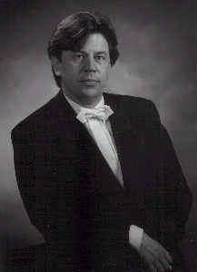
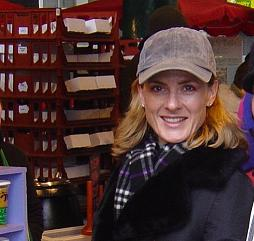

Dirigent
Het project valt onder de artistieke leiding van de vaste dirigent van Auletes, Jos van de Braak. Geboren en getogen in Thorn kwam Jos van de Braak (1958) al op vroege leeftijd in aanraking met de blaasmuziek. Na het voortgezet onderwijs studeerde hij directie aan het Utrechts Conservatorium en tevens enige jaren muziekwetenschappen aan de Rijksuniversiteit Utrecht. Ook nam hij deel aan internationale dirigentencursussen in Kerkrade en Rotterdam. Vanaf 1980 is Jos van de Braak actief als dirigent. Sindsdien behaalde hij met verschillende harmonie-orkesten aansprekende successen tijdens concerten en concoursen in binnen-en buitenland. Diverse malen concerteerde hij voor de Nederlandse omroepen.
In 1985 werd hij benoemd tot assistent-dirigent bij harmonie-orkest St. Michael van Thorn. Sindsdien werkt hij intensief samen met Heinz Friesen, een van 's werelds meest toonaangevende specialisten op het gebied van de blaasmuziek. De goede samenwerking met Heinz friessen reikt nog verder, sinds hij samen met hem benoemd is als dirigent van harmonie-orkest Sophia's Vereeniging uit Loon op Zand. Met beide orkesten volgende verscheidene succesvolle concerten.
Vanaf 1996 tot 2003 was Jos van de Braak dirigent van harmonieorkest St. Cecilia Simpelveld waarmee hij o.a. concerteerde in de concertserie ´Verrassende Ontmoetingen´ in Tilburg en tijdens het mini-WMC in Kerkrade in 1999.
Sinds januari 2002 is Jos van de Braak tevens als dirigent verbonden aan de Koninlijke Philharmonie van Bocholtz en vanaf april 2003 aan harmonieorkest O&U uit Beek en Donk.
Aan de Technische Universiteit Eindhoven vervult Jos van de Braak de functie van muzikaal (bege)leider van het studenten-harmonieorkest.
Daarnaast heeft hij zich toegelegd op het arrangeren van symfonische werken voor harmonieorkest. Inmiddels staan er ruim 100 arrangementen op zijn naam. Een groot aantal hiervan is ondergebracht bij zijn uitgeverij Baton Music in Eindhoven.

Choreografe
De choreografie is in handen van Suzanne Beyer-van Griensven, de vaste docente van de jazzballet groepen van Footloose. Een aantal studenten van Footloose zullen de dansen op deze avond ten uitvoer brengen.
Suzanne heeft een ruime ervaring in het doceren en choreograferen van dansen.
Suzanne is geboren in Stratum Eindhoven, getrouwd en moeder van 2 zonen, Brandon 3½ jaar en Ocker 2 jaar oud. Met 4 jaar begon ze met ballet.
Haar studie heeft ze aan de ballet academie,de Staatliche Hochschule für Musik in Mannheim gedaan. Nadat ze haar studie voor danseres en lerares na vier jaar succesvol afgesloten had, heeft ze in Keulen lesgegeven; ballet, jazz en konditietraining.
Zelf trainde ze o.a. in London en New York.
Na 3 jaar kreeg ze een studiebeurs van Gus Giordano in Chicago aangeboden, waar ze 6 maanden met zijn groep heeft getraind.
Sinds begin jaren 90 is ze freelance danseres en choreografe voor produktpresentaties, modeshows, musiculprodukties, videoclips, televisie en film in Duitsland en buitenland.
Verder heeft ze ook als presentatrice in Duitsland gewerkt.
Sinds 5 jaar woont ze weer in Nederland.
